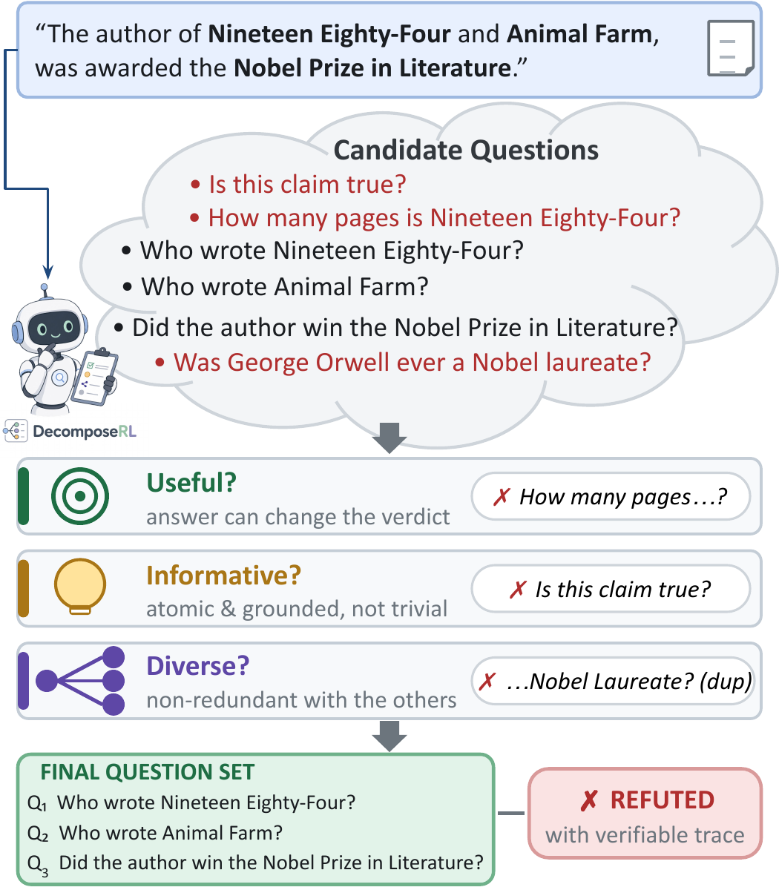
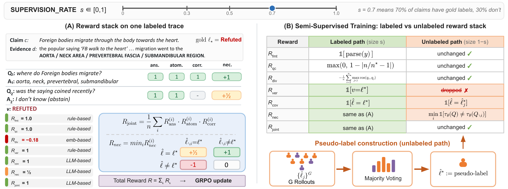

DecomposeRL: Learning to Ask Useful, Informative, and Diverse Questions for Semi-Supervised, Traceable Claim Verification
TL;DR: We treat claim decomposition as an RL policy optimization problem with seven multi-faceted rewards that define what makes a sub-question useful, informative, and diverse — closing the accuracy–traceability gap in fact verification with only 5k training claims.
Key Results

What makes a sub-question useful, informative, and diverse? DecomposeRL filters candidate sub-questions along three reward axes — useful (its answer can change the verdict), informative (atomic, answerable, and grounded), diverse (non-redundant) — and composes the surviving questions into an auditable verdict.
Abstract
Fact verification splits between end-to-end classifiers that are accurate but opaque, without inspectable traces, and decomposition-based methods that produce inspectable traces but lag on harder benchmarks. We argue the gap between accuracy and obtaining inspectable traces exists because the decomposer is never trained to optimize what makes a decomposition useful.
We propose DecomposeRL to close the gap by treating the decomposer as a reinforcement-learning policy with a reward ensemble that defines decomposition quality. DecomposeRL adapts GRPO with a proposed multi-faceted reward stack, complemented by a semi-supervised training mode that scores unlabeled claims with per-prompt majority-vote pseudo-labels. DecomposeRL overcomes prohibitively large training time for GRPO with a multi-layer curation pipeline to distill existing fact-verification corpora into a small, learning-signal-dense subset.
Experiments on 11 fact-verification benchmarks spanning biomedical, political, scientific, and general-domain claims demonstrate that DecomposeRL outperforms strong prompted and fine-tuned baselines while producing structured, traceable verification outputs, using only 5k training data compared to 14k for the strongest fine-tuned baseline.
Key Contributions
- Multi-faceted reward ensemble with two complementary formulations: per-question quality via a leave-one-out necessity matrix, and question-set-level contribution via a joint multiplicative reward.
- Semi-supervised training via a self-consistency reward that replaces gold verdicts with per-prompt majority-vote pseudo-labels, enabling training when annotated data is scarce.
- Data curation pipeline that distills 155k raw claims into a 96.5% smaller, learning-signal-dense training set of 5,464 claims.
- State-of-the-art results across 11 benchmarks — a 7B RL-trained policy matching or exceeding 32B and frontier models while producing traceable verification traces.
Our Approach
Data Curation Pipeline
A multi-stage funnel that distills 155k raw claims from 14 corpora into 5,464 learning-signal-dense training claims:
Reward Stack (7 Rewards)
Multi-faceted rewards that capture what makes a decomposition useful:
Programmatic Anchors (no judge calls):
- Rfmt Format — well-formed XML, Q→A alternation, valid verdict
- Rqc Question count — triangular kernel on ratio to silver decomposition
- Rdiv Diversity — MMR penalty over question embeddings
Per-Question Quality (judge-based, multiplicative):
- Rans Answerability — is the question answerable from evidence?
- Ratom Atomicity — 5-criterion binary checklist
- Rcorr Correctness — is the answer faithful to the document?
Set-Level Signals (outcome-grounded):
- Rver Verification — does the policy's verdict match the gold label?
- Rcov Coverage — can the answers alone reconstruct the gold verdict?
- Rnec Necessity — leave-one-out: does removing a question change the verdict?

The DecomposeRL reward stack and semi-supervised training. (A) Seven rewards across three categories feed GRPO. (B) A supervision rate splits claims into labeled and unlabeled paths, enabling semi-supervised training with self-consistency pseudo-labels.
Results
All 7B Methods Comparison
Balanced accuracy (%) of all 7B baselines and DecomposeRL across 9 in-domain datasets plus 2 out-of-domain benchmarks:
| Method | FEVER | ClaimDec. | HoVer | FEVEROUS | WiCE | Ex-FEVER | PubHealth | PubMedCl. | FoolMe2x | Micro | Avg | CoverBench | LLMAggreFact |
|---|---|---|---|---|---|---|---|---|---|---|---|---|---|
| DecomposeRL-7B Ours | 74.1 | 98.6 | 76.4 | 93.1 | 86.5 | 87.6 | 87.5 | 85.5 | 87.7 | 84.4 | 86.3 | 62.5 | 77.0 |
| Simple (7B) | 72.7 | 94.9 | 71.0 | 93.5 | 83.2 | 82.7 | 84.2 | 84.1 | 86.6 | 82.0 | 83.7 | 52.5 | 74.9 |
| CoT (7B) | 70.0 | 95.5 | 70.9 | 92.2 | 85.6 | 83.8 | 83.8 | 83.2 | 85.0 | 81.8 | 83.3 | 59.7 | 77.2 |
| DecomP (7B) | 65.5 | 95.3 | 69.0 | 91.9 | 85.0 | 78.0 | 85.7 | 82.5 | 84.1 | 79.3 | 81.9 | 55.3 | 76.2 |
| HiSS (7B) | 67.7 | 92.8 | 70.2 | 92.7 | 83.6 | 82.4 | 79.2 | 77.0 | 84.5 | 80.7 | 81.1 | 58.3 | 75.7 |
| MiniCheck | 69.9 | 77.5 | 73.8 | 89.2 | 87.2 | 82.9 | 76.3 | 83.0 | 84.5 | 81.9 | 80.5 | 54.6 | 80.3 |
| Self-Ask (7B) | 66.5 | 92.7 | 66.9 | 91.9 | 82.5 | 71.7 | 84.2 | 82.6 | 82.8 | 76.7 | 80.2 | 56.9 | 77.1 |
| FOLK (7B) | 65.0 | 90.8 | 68.2 | 91.0 | 83.6 | 80.2 | 80.5 | 77.8 | 83.1 | 79.0 | 80.0 | 53.8 | 75.6 |
| QACheck (7B) | 65.4 | 97.3 | 59.1 | 92.7 | 83.0 | 65.4 | 91.0 | 78.0 | 81.6 | 73.1 | 79.3 | 52.8 | 68.9 |
| Chen-2024 (7B) | 65.4 | 91.1 | 65.3 | 87.9 | 79.6 | 73.3 | 83.3 | 79.2 | 82.3 | 75.7 | 78.6 | 56.8 | 70.2 |
| ProgramFC (7B) | 60.5 | 92.9 | 65.9 | 88.2 | 85.4 | 74.6 | 77.4 | 74.3 | 76.9 | 75.2 | 77.3 | 53.1 | 73.5 |
| ClaimDecomp (7B) | 65.2 | 78.9 | 63.5 | 85.5 | 79.2 | 71.6 | 76.0 | 77.6 | 79.4 | 73.3 | 75.2 | 52.1 | 71.6 |
Bold = best in column; underline = second best. DecomposeRL-7B leads on 8 of 11 in-domain columns and CoverBench (OOD).
DecomposeRL (7B) vs. Best at Every Scale
Best baseline at each model scale (3B / 7B / 14B / 32B) plus the best frontier system (GPT-4.1-mini):
| Method | FEVER | ClaimDec. | HoVer | FEVEROUS | WiCE | Ex-FEVER | PubHealth | PubMedCl. | FoolMe2x | Micro | Avg | CoverBench | LLMAggreFact |
|---|---|---|---|---|---|---|---|---|---|---|---|---|---|
| Best @ 3B (Simple) | 71.5 | 94.0 | 63.7 | 89.0 | 73.7 | 82.0 | 81.2 | 78.7 | 79.3 | 77.6 | 79.2 | 51.3 | 74.0 |
| Best @ 7B (Simple) | 72.7 | 94.9 | 71.0 | 93.5 | 83.2 | 82.7 | 84.2 | 84.1 | 86.6 | 82.0 | 83.7 | 52.5 | 74.9 |
| Best @ 14B (DecomP) | 71.1 | 100.0 | 75.0 | 90.9 | 89.0 | 83.4 | 86.7 | 85.3 | 88.3 | 83.1 | 85.5 | 61.3 | 79.3 |
| Best @ 32B (DecomP) | 68.6 | 100.0 | 76.2 | 93.2 | 91.3 | 85.1 | 86.8 | 87.4 | 90.3 | 84.7 | 86.5 | 64.2 | 79.4 |
| Best Frontier (GPT-4.1-mini) | 70.9 | 100.0 | 76.7 | 93.5 | 87.2 | 88.3 | 86.4 | 87.1 | 91.1 | 85.8 | 86.8 | 68.6 | 78.9 |
| DecomposeRL-7B Ours | 74.1 | 98.6 | 76.4 | 93.1 | 86.5 | 87.6 | 87.5 | 85.5 | 87.7 | 84.4 | 86.3 | 62.5 | 77.0 |
Bold = best in column; underline = second best. DecomposeRL (7B) outperforms all 7B baselines by +2.6 Avg points and is competitive with 32B and frontier models.
All 7B Methods (Plot)
Model Scaling
Resources
Model
The trained DecomposeRL-7B policy is available on HuggingFace:
Dataset & Collection
The curated training set and full collection of artifacts:
BibTeX
@article{dipta2025decomposerl,
title={DecomposeRL: Learning to Ask Useful, Informative, and Diverse
Questions for Semi-Supervised, Traceable Claim Verification},
author={Shubhashis Roy Dipta and Ankur Padia and Francis Ferraro},
year={2025},
url={https://arxiv.org/abs/2605.27858v1},
}